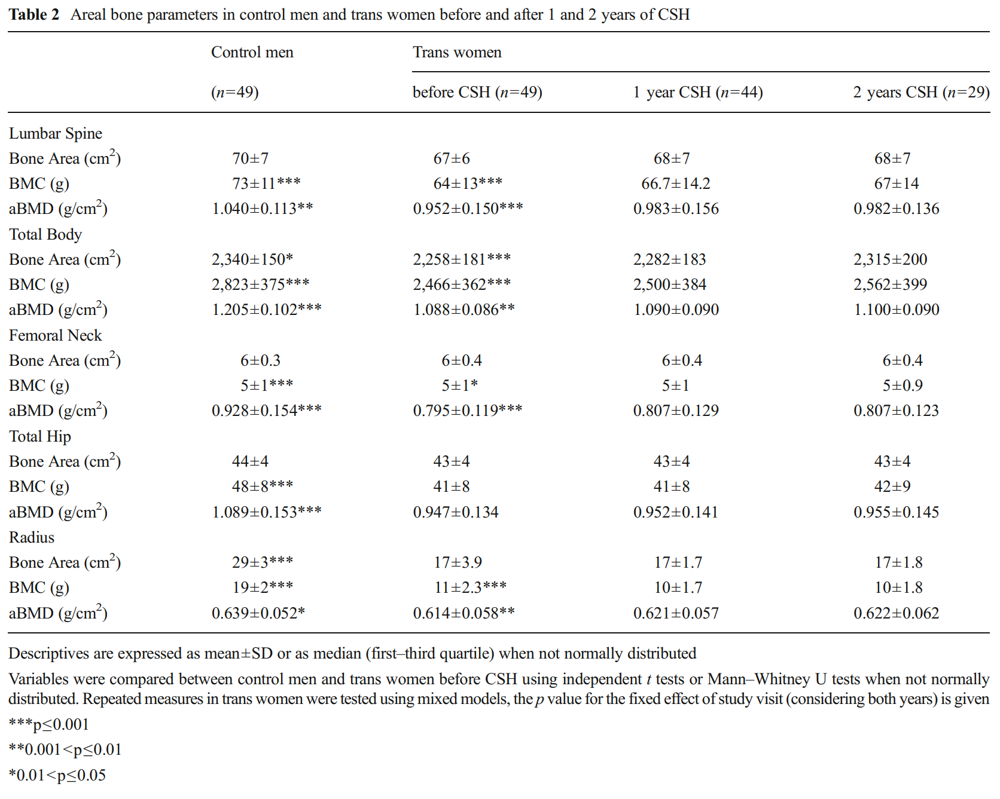
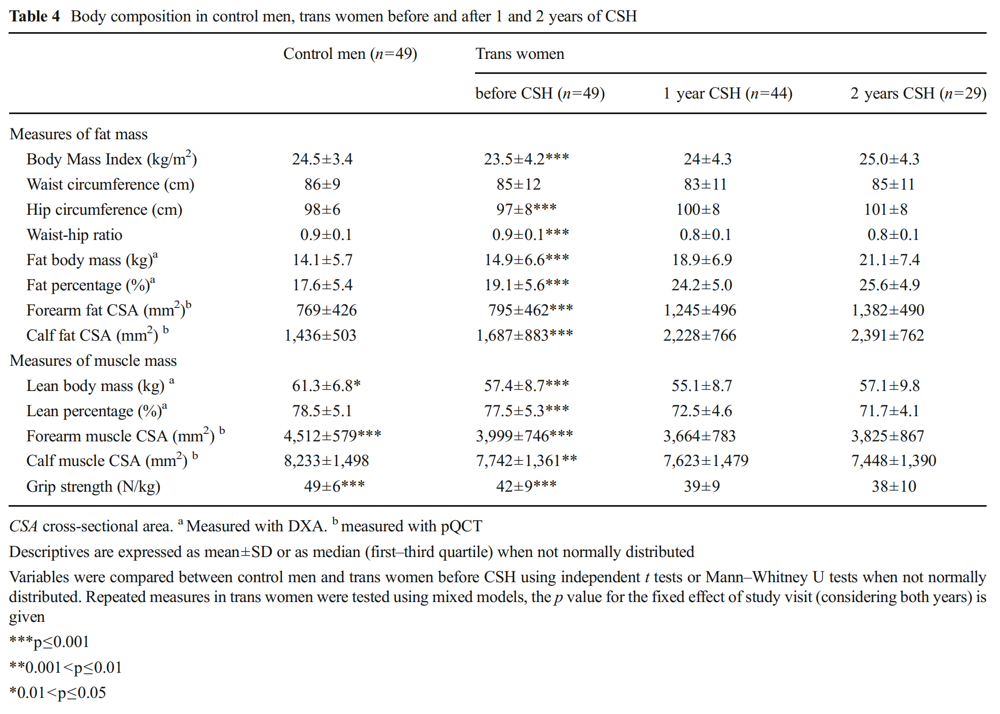
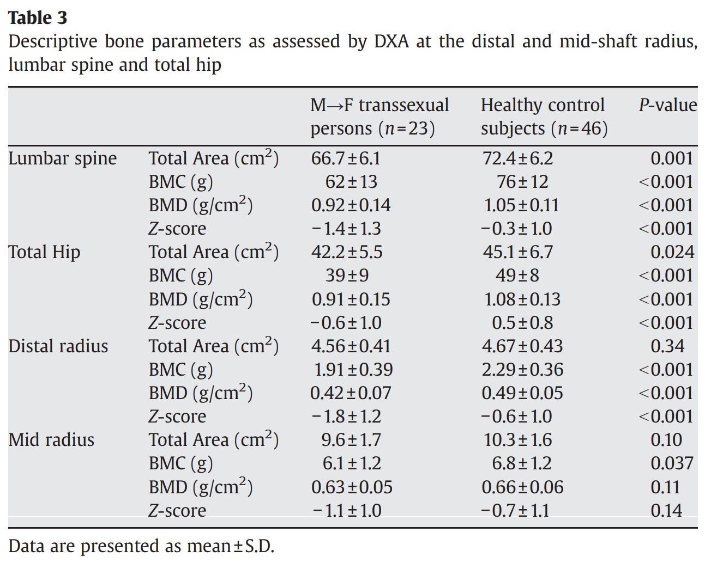
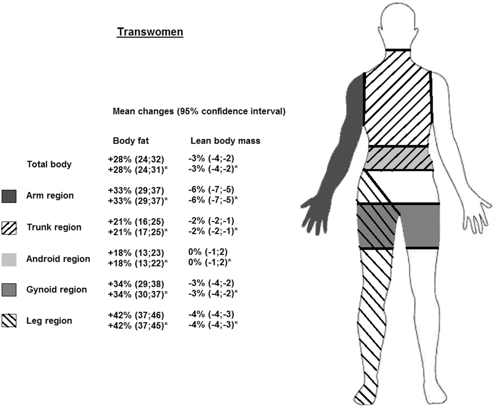

On Changes in Bone Shape in Transfeminine Individuals Under Gender-Affirming Hormone Therapy
By Lain | First published May 9, 2020 | Last modified October 5, 2020
TL;DR
The studies here do not show significant hip bone growth in adult transfeminine individuals under hormone therapy. They do show, however significant feminizing body shape changes that seem to largely be explained by increased fat placement around the hips and butt.
Introduction
An area of interest that I’ve seen a number of times is how does gender-affirming hormone therapy (GAHT) affect bones, specifically in adult transgender individuals. Within the context of transfeminine individuals the interest is often related to whether or not GAHT can cause an increase in hip bone area and give a body shape that is more feminine or gynoid.
However, one way to quantitatively measure these changes is via DXA scans. DXA or dual-energy X-ray absorptiometry is a non-invasive way to measure the distribution of different soft tissue types like fat and muscle as well as bone area and density. It is most commonly used to study bone mineral density (BMD) which is often used as a measure of bone health and when assessing risk for things like fractures or osteoporosis.
To date there have been two studies that I am aware of that look at body composition changes beyond changes in fat/muscle composition or external factors like waist–hip ratio (WHR) which I will review here.
Van Caenegem et al. (2014) - Preservation of Volumetric Bone Density and Geometry in Transwomen During Cross-Sex Hormonal Therapy: A Prospective Observational Study
This study, a component of the European Network for the Investigation of Gender Incongruence (ENIGI) initiative (Kreukels et al., 2012) investigated a wide variety of body composition changes in a controlled cohort of 49 transfeminine individuals with a mean age of 33 (± 12) years with a minimum of 17 and a maximum of 67 years before starting GAHT with 1 and 2 year follow ups and compared them to a cohort of age matched cis men. The GAHT regimen used here was standardized at 4 mg estradiol valerate daily orally (or 100 μg transdermal estradiol if over 45) with 50 mg cyproterone acetate.
|  |
|---|
| Figure 1: Results of various bone parameters (Van Caenegem et al., 2014). |
With respect to bone area while there was – somewhat surprisingly – a significant difference between the control men and transfeminine individuals prior to starting GAHT in various bone area measurements and BMD there was no statistically significant change in bone area for hips, radius (lower arm bone), femoral neck (the length between the femoral head which fits into the pelvis and the rest of the femur) or lumbar spine (lower spine bones).
However, despite this lack of change in total hip bone area – there were significant changes in WHR.
|  |
|---|
| Figure 2: Changes in body composition after 1 and 2 years of hormone therapy (Van Caenegem et al., 2014). |
You can see that while total hip bone area did not change significantly and neither did waist circumference – hip circumference and WHR ratio changed significantly – with WHR on average being what is considered a more feminine range.
Lapauw et al. (2008) - Body Composition, Volumetric and Areal Bone Parameters in Male-to-Female Transsexual Persons
This study is an earlier work by the same group out of Belgium. Unlike the previous one this one did not have a cohort that tracked before, and after beginning GAHT but rather compared individuals on GAHT with control cis men. Another area of difference is that everyone in this study had undergone gender confirmation surgery at least 3 years prior to being enrolled and had a mean age of 41 (± 7) years.
|  |
|---|
| Figure 3: Bone composition differences between the group of transfeminine individuals and cis men (Lapauw et al., 2008). |
These results again find no significant difference in total bone area of total hip or other specific areas looked at between the transfeminine individuals and the cis men. This study unfortunately did not also look at WHR or area specific body fat composition.
Discussion
Van Caenegem et al. (2014) paints a compelling picture of the changes experienced in transfeminine individuals under GAHT. While total bone area of the hip did not significantly change, WHR shrank due to an increase in hip circumference to a more gynoid distribution as has been reported a number of times in other places.
That this is due to fat mass is further bolstered by Klaver et al. (2017) which looked at body composition changes in 179 transfeminine individuals at regional areas and found that the “gynoid” area – or area around the hips experienced a 34% increase in fat percentage (see Figure 4 below).
|  |
|---|
| Figure 4: Body composition changes in regions of DXA scans (Klaver et al., 2017). |
While it is worth noting that the GAHT regimen given to these individuals is fairly homogeneous it should be pointed out that it did cause significant changes in body fat and WHR.
I believe this illustrates that the current evidence we have supports the idea that bone mass does not significantly change in adults under GAHT and that the primary contributor to changes in WHR and hip circumference are tissue focused – seemingly largely from increased fat deposition.
References
- Klaver, M., de Blok, C. J., Wiepjes, C. M., Nota, N. M., Dekker, M. J., de Mutsert, R., Schreiner, T., Fisher, A. D., T’Sjoen, G., & den Heijer, M. (2018). Changes in regional body fat, lean body mass and body shape in trans persons using cross-sex hormonal therapy: results from a multicenter prospective study. European Journal of Endocrinology, 178(2), 163–171. [DOI:10.1530/eje-17-0496]
- Kreukels, B., Haraldsen, I., De Cuypere, G., Richter-Appelt, H., Gijs, L., & Cohen-Kettenis, P. (2012). A European network for the investigation of gender incongruence: The ENIGI initiative. European Psychiatry, 27(6), 445–450. [DOI:10.1016/j.eurpsy.2010.04.009]
- Lapauw, B., Taes, Y., Simoens, S., Van Caenegem, E., Weyers, S., Goemaere, S., Toye, K., Kaufman, J., & T’Sjoen, G. G. (2008). Body composition, volumetric and areal bone parameters in male-to-female transsexual persons. Bone, 43(6), 1016–1021. [DOI:10.1016/j.bone.2008.09.001]
- Van Caenegem, E., Wierckx, K., Taes, Y., Schreiner, T., Vandewalle, S., Toye, K., Kaufman, J., & T’Sjoen, G. (2014). Preservation of volumetric bone density and geometry in trans women during cross-sex hormonal therapy: a prospective observational study. Osteoporosis International, 26(1), 35–47. [DOI:10.1007/s00198-014-2805-3]